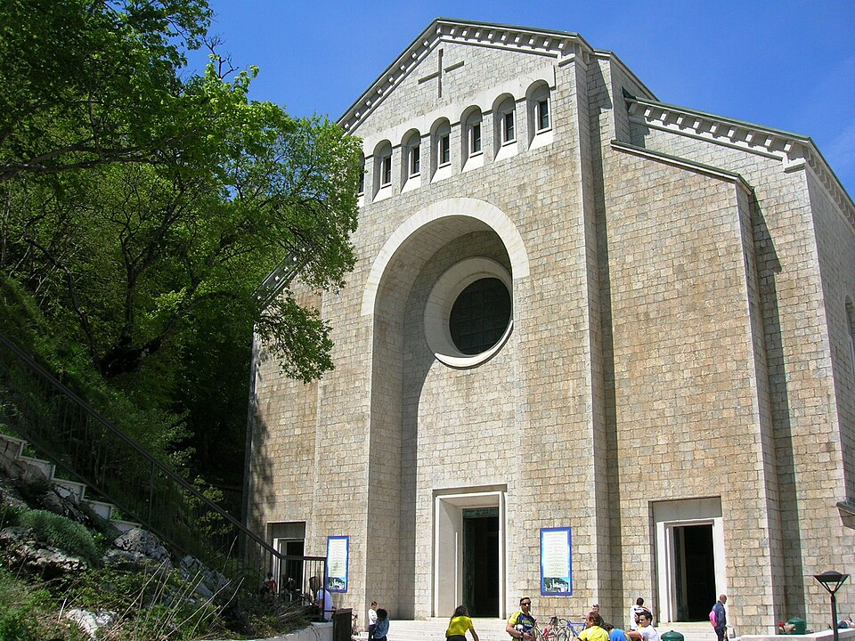

Saint / folklore
Monte Vergine

Background
Sanctuary of Montevergine is a Marian church in Mercogliano, located in the hamlet of Montevergine. It’s a part of the Territorial Abbey of Montevergine, one of the six Italian territorial abbeys. Inside, the painting of the Madonna di Montevergine is venerated and it is estimated that about one and a half million pilgrims visit it every year.
The sanctuary on Monte Partenio was founded in 1124 by the hermit William of Vercelli, and is now run by Benedictine monks. Its treasure is a large Byzantine-style icon of the Virgin, darkened by age. Neapolitans call her Mamma Schiavona, the “slave mother” or “dark mother”. She is one of the “seven sisters”, seven Marian images of Campania said to be sisters.
The pilgrimage season is famous for its festive character. Groups have long climbed the mountain at Pentecost singing and dancing the tammurriata on the way, a habit the Church periodically tried to tame. The Candlemas pilgrimage on 2 February, the juta dei femminielli, is associated with Naples’s femminielli and today’s LGBTQ+ community. It recalls a legend in which the Virgin freed two men who had been chained to a tree in the snow for loving each other.
Montevergine · William of Montevergine · Santuario di Montevergine (it) · Madonna di Montevergine (it) · Tammurriata (it) · Femminiello
· Wikipedia ↗ · Search Google ↗In Naples ’44
The mountain sanctuary of the Virgin above Avellino, on the site of an ancient shrine of Cybele; the banning of its 1944 Whitsun pilgrimage causes widespread public dismay, and its district furnishes Lattarullo with a lurid tale of fake clergy fleecing a woman black-marketeer.
Appears in 2 diary entries.
-
May 1 1944The onset of summer heat is announced by a street vendor's mournful cry, prompting the city's rhythms to visibly slow down.
pilgrimage shrine of the Virgin, formerly an ancient shrine of Cybele
-
June 7 1944Lattarullo's improvised income as a professional "mourning relative" at funerals picks up again with the fall of Rome, complete with a rented car and driver.
site referenced in a black-market swindle involving fake clergy
Use ← → to move between pages